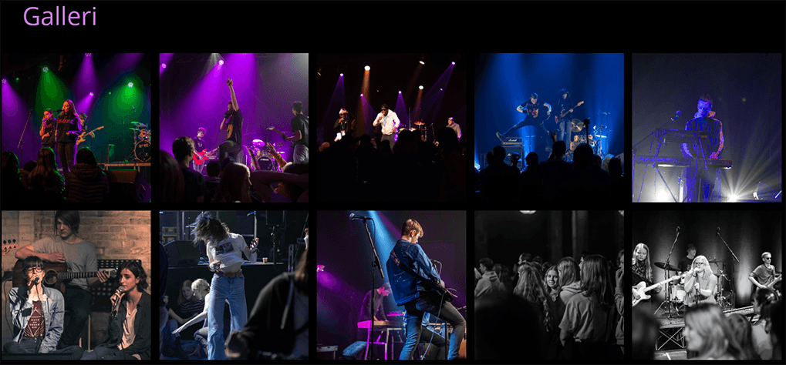
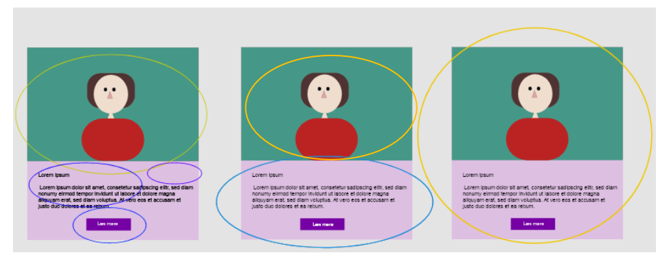
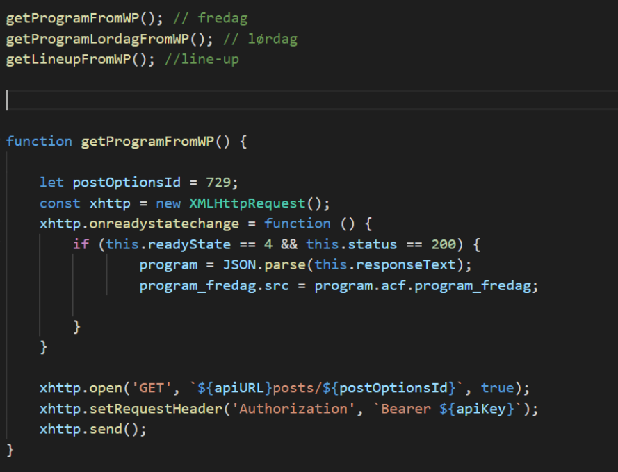

Ungdomsringens Musikfestival
Se løsningen herOpgaven
Jeg fik i 2. semester, i fælleskab med min daværende studiegruppe, til opgave at producere et website til Ungdomsringen. Ungdomsringen havde et ønske om et website i forbindelse med deres årlige Musikfestival, som kunne udstråle deres værdier; musik, ungeliv, fællesskab og socialt samvær.

Analyse og design
Vi startede her med at finde frem til målgruppen, hvorefter vi interviewede folk til undersøgelsen. Ud fra undersøgelsen fandt vi frem til adskillige fokuspunkter for det kommende website. Efter interviews og den tilhørende analyse, begyndte vi at benchmarke andre musikfestivaler, for at finde styrker og svagheder. Målet var primært at finde inspiration til UX/UI-design. Herefter startede vi idégenerering, og ved hjælp af foregående undersøgelser, fandt vi frem til et bestemt design, som kunne opfylde værdierne vi havde fokus på at udstråle. Der blev her arbejdet med sketching, adobe XD og atomic design. Der blev her også arbejdet med tekstforfatning i forbindelse med websitet.

Realisering
Til slut arbejdede vi med implementeringen ved brug af HTML, CSS, Javascript og Wordpress API. Siden er primært opbygget ved brug af CSS grid for at ramme de forskellige elementer ind.
Kodningen har her taget udgangspunkt i atomic design elementer som blev lavet i adobe XD.
Se løsningen her
